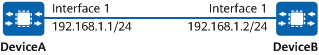

Example for Configuring Keychain Authentication for BGP
Networking Requirements
In Figure 1, DeviceA and DeviceB communicate with each other through BGP.
To ensure the stability and security of BGP connections, configure a keychain to provide dynamic security authentication for BGP.

In this example, interface1 represents 10GE 0/0/1.

To complete the configuration, you need the following data:
keychain name
- Acceptance tolerance of a keychain
- Values of TCP Kind and TCP Alg ID fields in the TCP Enhanced Authentication Option
Key ID in a keychain
Key authentication algorithm and key string
Send lifetime and accept lifetime of a key
Precautions
- NTP and BGP must be first configured.
- The keychain names configured on DeviceA and DeviceB must be the same.
- DeviceA and DeviceB must have the same time mode configured for the keychains.
- The key IDs in the keychains configured on DeviceA and DeviceB must be the same. When multiple keys are configured, the same number of keys with the same IDs must be configured on both ends.
- For the same key, the same authentication algorithm and key string must be configured on DeviceA and DeviceB.
- For the same key, the send lifetime and accept lifetime configured on DeviceA and DeviceB must match. For example, the accept lifetime configured on DeviceB must include the send lifetime configured on DeviceA to prevent packet loss. Similarly, the accept lifetime configured on DeviceA also must include the send lifetime configured on DeviceB.
- If multiple keys are configured in a keychain, only one of them can be configured as the default send key.
Configuration Roadmap
Create a keychain.
Configure the key in the keychain and set the authentication algorithm of the key ID to hmac-sha-256.
Configure keychain authentication for BGP.
Procedure
- Create a keychain.
# Configure DeviceA.
<HUAWEI> system-view [HUAWEI] sysname DeviceA [DeviceA] keychain huawei mode absolute [DeviceA-keychain-huawei] receive-tolerance 10 [DeviceA-keychain-huawei] tcp-kind 182 [DeviceA-keychain-huawei] tcp-algorithm-id hmac-sha-256 17 [DeviceA-keychain-huawei] quit
# Configure DeviceB.
<HUAWEI> system-view [HUAWEI] sysname DeviceB [DeviceB] keychain huawei mode absolute [DeviceB-keychain-huawei] receive-tolerance 10 [DeviceB-keychain-huawei] tcp-kind 182 [DeviceB-keychain-huawei] tcp-algorithm-id hmac-sha-256 17 [DeviceB-keychain-huawei] quit
- Configure a key in the keychain.
# Configure DeviceA.
[DeviceA] keychain huawei [DeviceA-keychain-huawei] key-id 1 [DeviceA-keychain-huawei-keyid-1] algorithm hmac-sha-256 [DeviceA-keychain-huawei-keyid-1] key-string cipher YsHsjx_202207 [DeviceA-keychain-huawei-keyid-1] send-time 12:00 2019-12-10 to 15:00 2019-12-10 [DeviceA-keychain-huawei-keyid-1] receive-time 12:00 2019-12-10 to 15:00 2019-12-10 [DeviceA-keychain-huawei-keyid-1] default send-key-id [DeviceA-keychain-huawei-keyid-1] quit [DeviceA-keychain-huawei] key-id 2 [DeviceA-keychain-huawei-keyid-2] algorithm hmac-sha-256 [DeviceA-keychain-huawei-keyid-2] key-string cipher YsHsjx_202206 [DeviceA-keychain-huawei-keyid-2] send-time 15:05 2019-12-10 to 18:00 2019-12-10 [DeviceA-keychain-huawei-keyid-2] receive-time 15:05 2019-12-10 to 18:00 2019-12-10 [DeviceA-keychain-huawei-keyid-2] quit [DeviceA-keychain-huawei] quit
# Configure DeviceB.
[DeviceB] keychain huawei [DeviceB-keychain-huawei] key-id 1 [DeviceB-keychain-huawei-keyid-1] algorithm hmac-sha-256 [DeviceB-keychain-huawei-keyid-1] key-string cipher YsHsjx_202207 [DeviceB-keychain-huawei-keyid-1] send-time 12:00 2019-12-10 to 15:00 2019-12-10 [DeviceB-keychain-huawei-keyid-1] receive-time 12:00 2019-12-10 to 15:00 2019-12-10 [DeviceB-keychain-huawei-keyid-1] default send-key-id [DeviceB-keychain-huawei-keyid-1] quit [DeviceB-keychain-huawei] key-id 2 [DeviceB-keychain-huawei-keyid-2] algorithm hmac-sha-256 [DeviceB-keychain-huawei-keyid-2] key-string cipher YsHsjx_202206 [DeviceB-keychain-huawei-keyid-2] send-time 15:05 2019-12-10 to 18:00 2019-12-10 [DeviceB-keychain-huawei-keyid-2] receive-time 15:05 2019-12-10 to 18:00 2019-12-10 [DeviceB-keychain-huawei-keyid-2] quit [DeviceB-keychain-huawei] quit
- Configure keychain authentication for BGP.
# Configure DeviceA.
[DeviceA] interface 10ge 0/0/1 [DeviceA-10GE0/0/1] ip address 192.168.1.1 24 [DeviceA-10GE0/0/1] quit [DeviceA] bgp 1 [DeviceA-bgp] router-id 1.1.1.1 [DeviceA-bgp] peer 192.168.1.2 as-number 1 [DeviceA-bgp] peer 192.168.1.2 keychain huawei [DeviceA-bgp] quit [DeviceA] quit
# Configure DeviceB.
[DeviceB] interface 10ge 0/0/1 [DeviceB-10GE0/0/1] ip address 192.168.1.2 24 [DeviceB-10GE0/0/1] quit [DeviceB] bgp 1 [DeviceB-bgp] router-id 2.2.2.2 [DeviceB-bgp] peer 192.168.1.1 as-number 1 [DeviceB-bgp] peer 192.168.1.1 keychain huawei [DeviceB-bgp] quit [DeviceB] quit
Verifying the Configuration
Using DeviceA as an example, check whether keychain authentication is successfully configured for BGP.
- Run the display keychain keychain-name command to check the key ID in the Active state.
<DeviceA> display keychain huawei Keychain Information: ---------------------- Keychain Name : huawei Timer Mode : Absolute Receive Tolerance(min) : 10 Digest Length : 32 Time Zone : LMT TCP Kind : 182 TCP Algorithm IDs : HMAC-MD5 : 5 HMAC-SHA1-12 : 2 HMAC-SHA1-20 : 6 MD5 : 3 SHA1 : 4 HMAC-SHA-256 : 17 SHA-256 : 8 SM3 : 9 HMAC-SHA-384 : 11 HMAC-SHA-512 : 12 Number of Key ID : 2 Active Send Key ID : 1 Active Receive Key ID : 01 Default send Key ID : 1 Key ID Information: ---------------------- Key ID : 1 Key string : ****** Algorithm : HMAC-SHA-256 SEND TIMER : Start time : 2019-12-10 12:00 End time : 2019-12-10 15:00 Status : Active RECEIVE TIMER : Start time : 2019-12-10 12:00 End time : 2019-12-10 15:00 Status : Active Key ID : 2 Key string : ****** Algorithm : HMAC-SHA-256 SEND TIMER : Start time : 2019-12-10 15:05 End time : 2019-12-10 18:00 Status : Inactive RECEIVE TIMER : Start time : 2019-12-10 15:05 End time : 2019-12-10 18:00 Status : Inactive - Run the display bgp peer ipv4-address verbose command to verify that the authentication type configured for the BGP peer is Keychain(huawei).
<DeviceA> display bgp peer 192.168.1.2 verbose BGP Peer is 192.168.1.2, remote AS 1 Type: IBGP link BGP version 4, Remote router ID 2.2.2.2 Update-group ID: 3 BGP current state: Established, Up for 00h27m26s BGP current event: RecvKeepalive BGP last state: OpenConfirm BGP Peer Up count: 2 Received total routes: 0 Received active routes total: 0 Advertised total routes: 0 Port: Local - 58168 Remote - 179 Configured: Connect-retry Time: 32 sec Configured: Min Hold Time: 0 sec Configured: Active Hold Time: 180 sec Keepalive Time:60 sec Received : Active Hold Time: 180 sec Negotiated: Active Hold Time: 180 sec Keepalive Time:60 sec Peer optional capabilities: Peer supports bgp multi-protocol extension Peer supports bgp route refresh capability Peer supports bgp 4-byte-as capability Address family IPv4 Unicast: advertised and received Received: Total 34 messages Update messages 1 Open messages 1 KeepAlive messages 32 Notification messages 0 Refresh messages 0 Sent: Total 33 messages Update messages 1 Open messages 1 KeepAlive messages 31 Notification messages 0 Refresh messages 0 Authentication type configured: Keychain(huawei) Last keepalive received: 2019-12-10 10:12:29+00:00 Last keepalive sent : 2019-12-10 10:12:04+00:00 Last update received: 2019-12-10 09:45:14+00:00 Last update sent : 2019-12-10 09:45:14+00:00 No refresh received since peer has been configured No refresh sent since peer has been configured Minimum route advertisement interval is 15 seconds Optional capabilities: Route refresh capability has been enabled 4-byte-as capability has been enabled Peer Preferred Value: 0 Routing policy configured: No routing policy is configured
Configuration Scripts
DeviceA
# sysname DeviceA # keychain huawei mode absolute receive-tolerance 10 tcp-kind 182 tcp-algorithm-id hmac-sha-256 17 # key-id 1 algorithm hmac-sha-256 key-string cipher %+%#1h29-c>>[H,XTu>Q}##;"}JOQOK#c>TD6>~d-BaJ%+%# send-time 12:00 2019-12-10 to 15:00 2019-12-10 receive-time 12:00 2019-12-10 to 15:00 2019-12-10 default send-key-id # key-id 2 algorithm hmac-sha-256 key-string cipher %+%#^<Sn.IK2iK'N%[VnMhv-I)|C4d<K$F$a.6%jEN@K%+%# send-time 15:05 2019-12-10 to 18:00 2019-12-10 receive-time 15:05 2019-12-10 to 18:00 2019-12-10 # interface 10GE0/0/1 ip address 192.168.1.1 255.255.255.0 # bgp 1 router-id 1.1.1.1 peer 192.168.1.2 as-number 1 peer 192.168.1.2 keychain huawei # ipv4-family unicast peer 192.168.1.2 enable # return
DeviceB
# sysname DeviceB # keychain huawei mode absolute receive-tolerance 10 tcp-kind 182 tcp-algorithm-id hmac-sha-256 17 # key-id 1 algorithm hmac-sha-256 key-string cipher %+%#p8cb/;OMFES0Wx@PY^"Ka{6q2MB;oG|[ZO-_]u}&%+%# send-time 12:00 2019-12-10 to 15:00 2019-12-10 receive-time 12:00 2019-12-10 to 15:00 2019-12-10 default send-key-id # key-id 2 algorithm hmac-sha-256 key-string cipher %+%#&Yq4=s*P:L<"8iG-|o1ZB*Qi0qCn%N{Y3a&Z-zuD%+%# send-time 15:05 2019-12-10 to 18:00 2019-12-10 receive-time 15:05 2019-12-10 to 18:00 2019-12-10 # interface 10GE0/0/1 ip address 192.168.1.2 255.255.255.0 # bgp 1 router-id 2.2.2.2 peer 192.168.1.1 as-number 1 peer 192.168.1.1 keychain huawei # ipv4-family unicast peer 192.168.1.1 enable # return